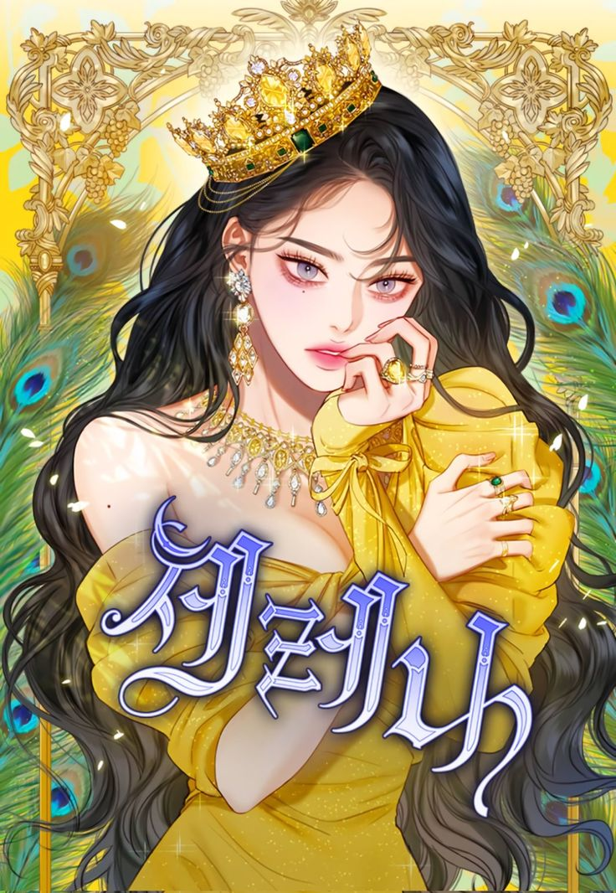
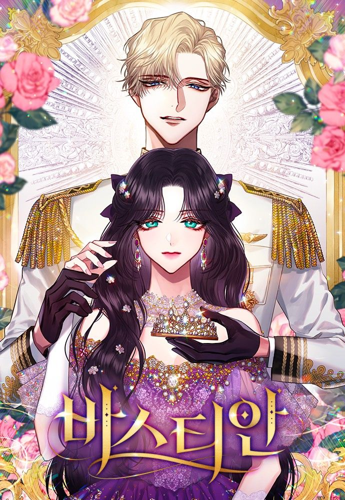

Serena
 SINOPSIS:Cantik, muda, kaya raya, kehidupan Serena nyaris sempurna. Hanya dua hal yang membuatnya tidak sempurna, pernikahan yang cacat dan harta warisan milik keluarganya yang dikelola oleh sang suami yang menurutnya bengis dan tidak punya hati. Tapi kali ini, Serena tidak akan tinggal diam. Dia akan merebut kepemilikannya segera!
Cry, or Better Yet, Beg
 SINOPSIS:
SINOPSIS:
Mahakarya Keluarga Herhardt, penguasa muda surga Arvis, sekaligus pembantai burung yang indah—itulah Matthias von Herhardt. Suatu hari, takdir mempertemukannya dengan Layla Llewellyn, burung kecil yang menggoyahkan dan memorak-porandakan kehidupannya yang sempurna. Arvis yang seindah surga berubah menjadi sangkar, dan di dalamnya tergelar kisah cinta bercampur kebencian.
Bastian
 SINOPSIS:Bastian Klauvitz, kapten angkatan laut dari keluarga kaya raya, membutuhkan batu loncatan demi kesuksesan balas dendamnya. Odette von Dyssen, putri duke gelandangan dari garis keturunan kekaisaran, membutuhkan uang untuk kehidupan baru. Kesepakatan pernikahan yang didasari tujuan pribadi awalnya disetujui karena saling menguntungkan, sampai pada suatu saat terjadilah kehancuran…
Taming the Corrupted
 SINOPSIS:
SINOPSIS:
Arene Sercia mengira hidupnya akan berakhir setelah dikhianati dan dibunuh oleh tunangannya, Damian. Namun, takdir berkata lain. Arene kembali ke kehidupannya 4 tahun lalu, saat sang ayah masih hidup dan dia belum bertemu dengan Damian. Di kesempatan kedua ini, Arene berambisi untuk membalaskan dendamnya pada Damian dengan mengangkat Kassadin, seorang gladiator yang juga adalah budak, menjadi adik laki-lakinya. Bisakah rencana pembalasan dendam Arene berjalan lancar? Dan siapa Kassadin sebenarnya?
Beast’s Flower
 SINOPSIS:
SINOPSIS:
Layla, yang sudah bau busuk sejak lahir, terpaksa tinggal sendiri di sebuah gubuk di tengah hutan. Pada suat hari, Viost yang 'tidak bisa mencium bau' menghampiri Layla di gubuknya. Untuk pertama kalinya, Layla diperlakukan dengan baik oleh seseorang. Lambat laun, Layla jatuh cinta padanya... tapi akankah cintanya itu membahayakan dirinya?
Charming the Duke of the North
 SINOPSIS:
SINOPSIS:
Duke si raja dingin tiba-tiba dihadapkan dengan Rinha, aktris top dari dunia lain. Ingin kembali ke dunianya, Rinha mengajukan perjanjian hubungan dengan sang raja. Terjebak di hubungan sandiwara, apa rasanya ya jadi pendamping Duke dari Utara di dunia yang tak dikenal?
Rosalyn Vogart
 SINOPSIS:
SINOPSIS:
Demi mendapat pengakuan Sang Ayah, Rosalyn Vogart bekerja keras hingga membuat keluarganya menjadi yang terkaya, bahkan melebihi keluarga kerajaan. Namun, ayahnya yang serakah masih tidak puas sampai tega 'menjual' putrinya sendiri ke keluarga kerajaan hanya demi sebuah gelar. Rosalyn yang muak kini membuat rencana untuk membalas dendam. Apakah rencananya akan berjalan lancar dengan keberadaan Robien, Putra Mahkota Kerajaan Calabria, calon suaminya? Atau justru Robien-lah batu penghalangnya?
I'm the Queen in This Life
 SINOPSIS:
SINOPSIS:
Demi cinta dan pengakuan dari Cesare, Ariadne rela melakukan segalanya termasuk membunuh Putra Mahkota Kerajaan Etruscan. Sayangnya, semua pengorbanan tersebut berujung pada pengkhianatan hingga Ariadne dibunuh oleh saudaranya sendiri. Namun, alih-alih meninggal dunia, Ariadne malah kembali ke 15 tahun yang lalu. Tak ingin mengulangi nasib buruknya, ia pun berencana untuk balas dendam dan memperbaiki jalan hidupnya.
Not Your Typical Reincarnation Story
 SINOPSIS:
SINOPSIS:
Setelah kecelakaan yang dialaminya, seorang perempuan malang bereinkarnasi menjadi Edith Rigelfhof, peran antagonis dari webnovel “Tanpa Obsesi” yang ia baca semalaman! Sebagai penggemar berat cerita romantis-fantasi, dia tahu akhir mengerikan yang akan dialami karakter Edith dan bertekad untuk menghindari nasibnya pada cerita asli! Dimulai dari pernikahan politik dengan putra dari Count Rudwick yang sangat tampan, bisakah Edith menikmati hidup barunya sebagai bangsawan dan menghindari ajal yang sudah menjadi takdirnya?